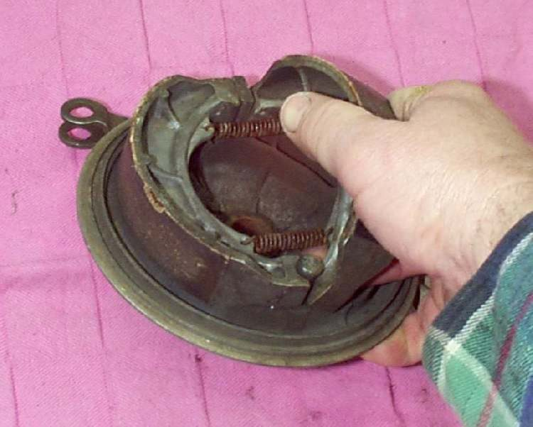

Spare parts / Bajaj / Boxer BM150 / X125 / Drum brake shoes
Bajaj Boxer BM150 / X125 drum brake shoes
Drum brake shoes for the Bajaj Boxer BM150 / X125: when to replace it, what it costs, where to buy it and how to fit it.
 Illustration
IllustrationWorkshop photos


Where to buy
- Google ShoppingSearch results for this partgoogle.com ↗
- eBaySearch results for this partebay.com ↗
- AliExpressSearch results for this partaliexpress.com ↗
- JumiaSearch results for this partjumia.co.ke ↗
- Bajaj Genuine PartsOEM direct: Official Bajaj parts app and distributor locator: Pulsar, Platina, Boxerbajajauto.com ↗
- Muthuri MotopartsRetailer + mobile mechanics: Verified parts, same-day delivery, mobile mechanics in Nairobivc4a.com ↗
- Car & General (TVS Kenya)OEM distributor: TVS genuine parts and dealer network in Kenyacargen.com ↗
- TVS Genuine PartsOEM direct: Official TVS parts shop: Jupiter, Apache, Raider, HLXtvsmotor.com ↗
Check the part number for your model year before you buy. Genuine (OEM) parts first; good aftermarket parts are fine for wear items. Links open shop searches; Motopedia earns nothing from them today and will say so here if that changes.
Fit it yourself
Fitment
| Model | Bajaj Boxer BM150 / X125 |
| Type | Boda-boda |
| Engine | 100-150 cc |
| Final drive | Chain |
| Brakes | Drum |
| Main markets | KE/East Africa |
Questions
How often should I replace the drum brake shoes on a Bajaj Boxer BM150 / X125?
As a guide, 10,000-18,000 km. The owner's manual for your model wins, and riding on dusty roads, with a passenger or with heavy loads shortens it.
How much does a Bajaj Boxer BM150 / X125 drum brake shoes cost?
Typically US$ 3 to 20, depending on genuine or aftermarket and the shop. Prices are indicative.
Can I replace the drum brake shoes myself?
The job is rated 2 of 5 for difficulty. It is safety-critical: if you are not sure, have a mechanic check your work before you ride.
More parts for the Bajaj Boxer BM150 / X125
 Illustration
Illustration Illustration
Illustration Illustration
Illustration Illustration
Illustration Illustration
Illustration Illustration
IllustrationAll parts for the Bajaj Boxer BM150 / X125 → Drum brake shoes for other bikes →